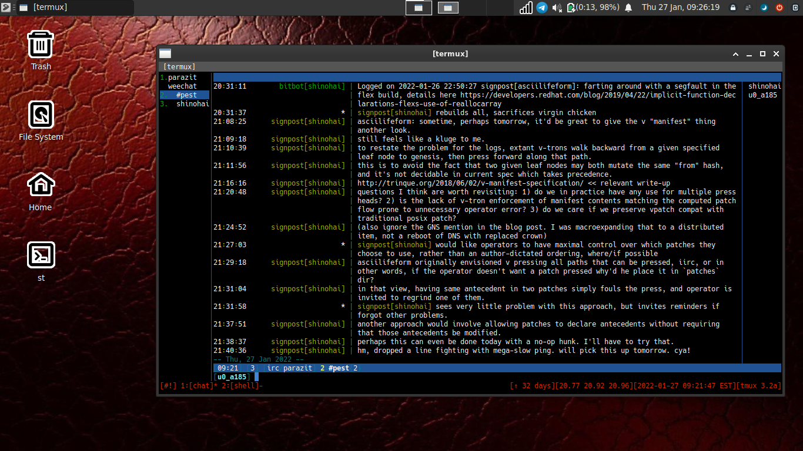

Adventures in pest testnet - connecting an Android device
A few months ago I published a piece documenting how to set up a gentoo chroot using termux. Since that makes python2.7 available, why not try and connect it to pest testnet?
I promptly set about installing thimbronion: 's blatta by uploading a tarball of it via the phone's sd card. I took the liberty of stripping it down a bit a renaming the main executable "parazit" for this test simply so I could readily distinguish the station on my local network. From within the pest directory I made a startup script with the following contents:
python2.7 parazit \
--log-level debug \
--udp-port=7778 \
--address-table-path=config.py \
--motd=motd
I then run the startup script inside a screen session. Once the station is running in the background I then connect via weechat.

You can also echo text to your weechat fifo like so:
echo 'irc.parazit.#pest *test message from cli' > ~/.weechat/weechat_fifo
At the time of this post the pest station has been running for well over 24 hours with no noticeable affect on the battery or cpu usage. Future experiments may involve sticking this device in a purse and seeing how the station connects outside the local network.